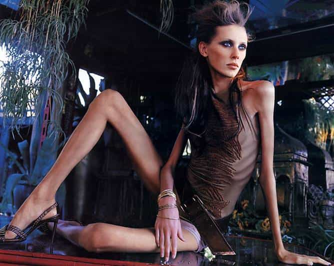
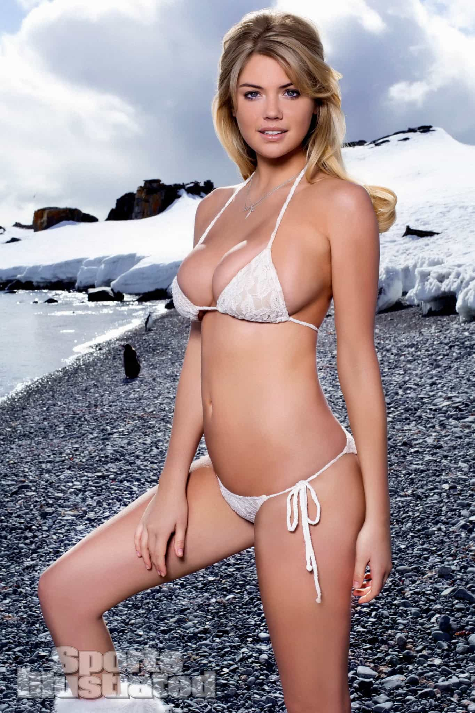
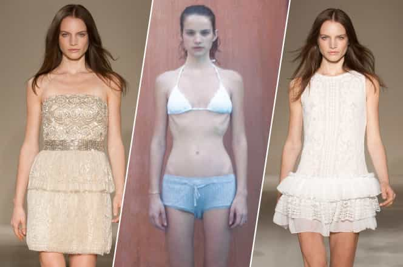
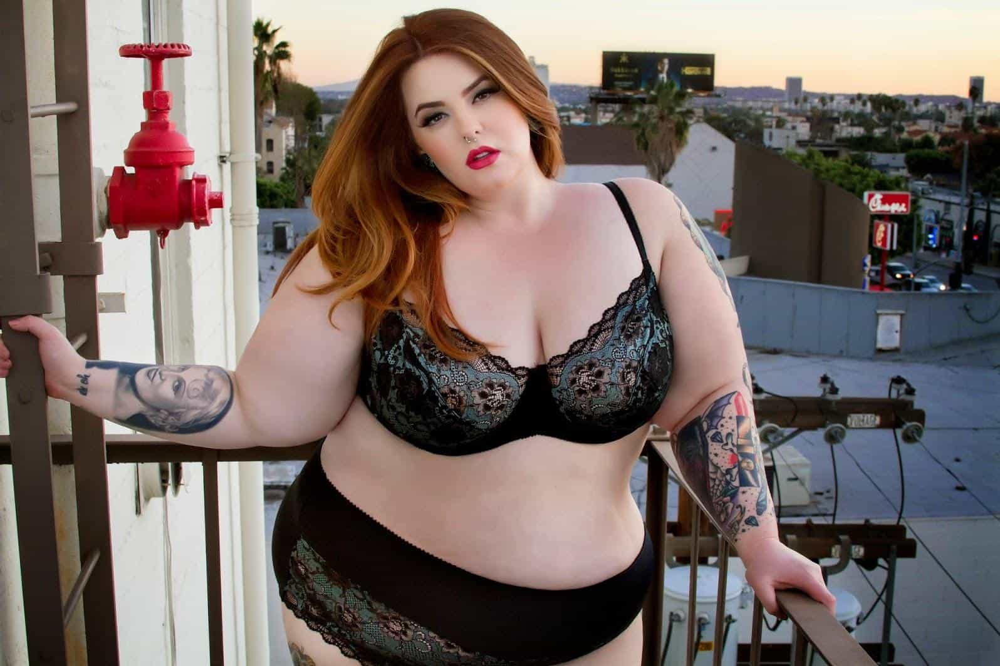

< < < Back
When Will Women And Gay Men Apologize For All The Anorexic Fashion Models? – Return Of Kings
Even when women and gay men run the show, any bad things happening to other women is the fault of straight men reinforcing the patriarchy. In perhaps no arena is this blame game more apparent than the fashion industry. Here, veritable armies of females and homosexuals vastly outnumber straight men, but straight men still get the blame when girl skeletons start parading up and down at Paris or Milan Fashion week.
Here’s an example below, a look promoted and defended by gay man Karl Lagerfeldt:

Similar things can be observed about fashion models employed by female designers and company heads. Nonetheless, we could say the problem is most acute with out-of-their-depth homosexual designers, who pretend they know what constitutes a healthy, attractive woman. Lagerfeldt is joined by gay men like Alexander McQueen (now deceased), Calvin Klein, John Galliano, and others in having a penchant for pushing emaciated girls into the public spotlight. If you added together their individual market shares and industry clout, they effectively control well over half and perhaps three-quarters of the industry.
Yet when we take a look at the kinds of girls straight men prefer, as evidenced by them purchasing publications like Sports Illustrated, models tend to look, even at their thinnest, like Kate Upton:

Consequently, there are two reasons why we find so many anorexic models in the female and gay-dominated fashion industry: a) of any group, straight men know best what an attractive female looks like and b) our culture only considers starving a woman as abuse when it is perpetrated by straight men. And because men are genetically programmed to appreciate healthy women, this slow death by anorexia is almost exclusively the domain of controlling gays and women.
Just don’t tell the feminist typists all this. And, surprise, surprise, one of the lone voices that has challenged the use of anorexic models is Giorgio Armani, who, while he has slept with men, has also slept with women. By contrast, for gay men in the fashion industry in particular, their delusions know no bounds. They honestly believe they have their fingers on the pulse of what makes a woman attractive, which is very closely correlated with what makes her healthy. The results speak for themselves.
Just look at what models themselves have said about these women and gay men

She describes designer Miuccia Prada as a “witch” and tells how her 32A boobs were deemed too big by Chanel’s Karl Lagerfeld.
— Catwalk model Victoire Dauxerre lambasting Miuccia Prada (a woman) and Karl Lagerfeld (a gay).
Though many models have to shut up in the interest of keeping their careers (or avoiding a law suit), enough have come out to attack their former employers. And the overwhelming majority of the people these girls criticize, especially over things like their anorexia or other eating disorders, are gay men, straight women, or fashion companies run by gay men and/or straight women. If the straight male is anywhere, he must be behind the scenes, pulling the puppet strings of the well-intentioned gays and females, right?
The case of model Victoire Dauxerre above is very run-of-the-mill. The New York Post relates how she worked for Prada, headed by the founder’s allegedly terrible granddaughter Miuccia, Alexander McQueen (a gay man whose brand was known as being pro-anorexic both before and after he died) and Céline, a label founded by a woman and whose current “creative director”, Phoebe Philo, is a woman.
What land whales and skeletons have in common
Both human blimps and human sticks are the result of sustained attempts by feminists, gay men, and leftists to redefine what society—and straight men—should find attractive. Much of the time, especially in the fashion industry, the interventions of gay men are not so much political, like with feminists, as misguided attempts to determine what will make them the most money and to portray themselves as female beauty “experts.” Yet with bonafide SJWs, the intention is much more sinister. They may rail against thin models, to the point of attacking healthy but slim, jealousy-inducing girls, rather than anorexic women, but they simultaneously sell the idea that females like Tess Munster/Holliday are gorgeous:

The irony is that if women simply conformed to the preferences of men, they would be much healthier and much happier. Still, this is supremely unlikely to happen. Doing so would require SJWs to admit that straight men are actually right and force them to concede that the real misogyny when it comes to endangering female health and beauty is committed by the women and gay men of the fashion world.
Read More: Is Obese “Model” Tess Holliday Stealing Money From Domestic Violence Charities?